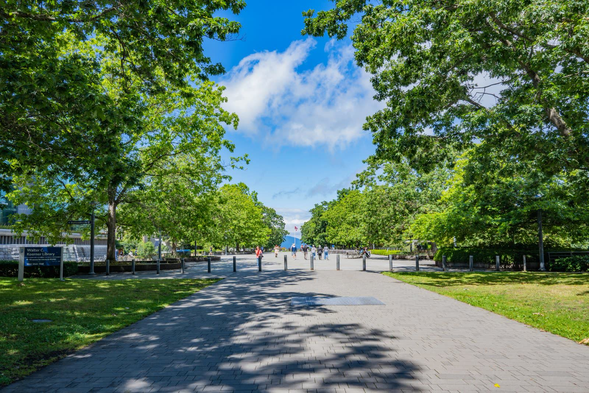

1クラス20名前後のゼミ
入学直後から少人数ゼミに所属。先生と学生の距離が近く、発言の機会が自然と増えます。
【 大学について 】
光葉女子大学は、女性が自分の意思で学び、社会の中で自分の道を切り拓くための場として生まれました。少人数のゼミと、学生一人ひとりに寄り添う指導を大切にし、創立以来その姿勢を受け継いでいます。
入学直後から少人数ゼミに所属。先生と学生の距離が近く、発言の機会が自然と増えます。
全学共通の授業で、チームで課題を解決する力と、自分の意見を伝える力を育てます。
短期研修から交換留学まで、段階的に選べる海外プログラムを用意しています。
個別面談、OG訪問、インターンシップ。卒業後の進路を早くから一緒に考えます。
【学部・学科】
ことば、こころ、くらし、情報、国際。5つの学部で、興味を専門へと深めていきます。1年次は学部の枠を越えて幅広く学び、2年次から専門分野へ進みます。
※学部・学科構成はサンプルです。
学部・学科一覧へ›教室で学んだことを、現場で試す。研究で確かめる。学部の垣根を越えて組み合わせる。光葉の学びには、3つの軸があります。
【学びの特徴】

運動系から文化系、ボランティアまで。学年を越えた仲間ができます。
一人で集中する席も、グループで話し合えるスペースもそろっています。
学生が企画・運営する学園祭をはじめ、一年を通じて行事があります。
【 入試・オープンキャンパス 】
※日程・選抜方法は各年度の入学試験要項で必ずご確認ください。